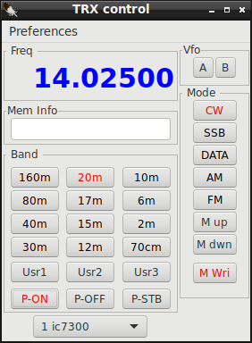
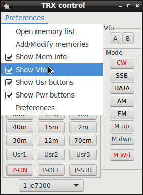

|
WARNING! Backup your data often! BACKUP your log directory at the end of EVERY session! All that you need to backup and store in a safe place is the log database directory located in the ~/.config/cqrlog/database folder, or you can enable the autobackup function in Preferences. This autobackup function creates an ADIF file with a backup of your log. /td> |
| < Prev | [Menu] | Next > |



TRX Control window Shows current frequency and buttons allow change of Band, mode, memory and rig.
M_up and M_dwn buttons select next/previous entry from memory list. Buttons are current mode related.
Example: If your Mode is SSB, only memories with mode USB or LSB will take effect from M-up/M_dwn buttons.
M_Wri adds entry to memory list from current rig frequency and mode.
With P-on/off/stb buttons current rig can be set ON, OFF or STANDBY (if it supports rigctld power commands).
Default setting for power buttons is hidden. You can change it via dropdown menu "Preferences".
See also setting up TRXControl
| < Prev | [Menu] | Next > |